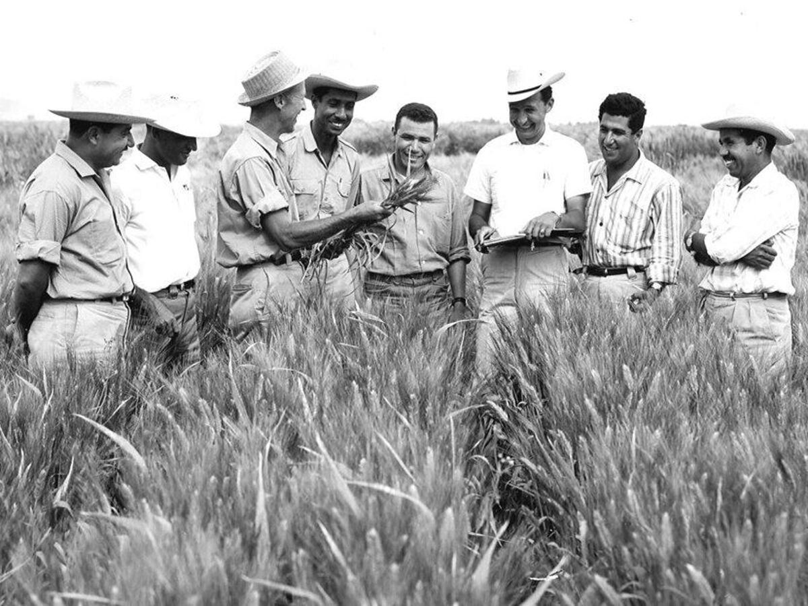

Dr. Norman Borlaug
The man who saved a billion lives

Norman Borlaug, tgird from the left, trains biologists in Mexico on how to increase wheat yiels - part of his life-long war hunger.
Here's time line of Dr. Borlaug's life:
- 1914 - Born in Cresco, Iowa
- 1933 - Leaves his family's farm to attend the university of Minnesota, thanks to a Depression era program known as the "National Youth Administration"
- 1935 - Has to stop school and save up more money. Works in the Civilian Conservation Corps, helping starving Americans. " I saw how food changed them", he said. "All of this left scars on me"
- 1937 - Finishes uniiversity and takes a job in the US Forestry Service
- 1938 - Marries wif of 69 years Margret Gibson. Gets laid off due to budget cuts. Inspiredf by Elvin Charles Stakman, he returns to school study ubder Stakman, who teachesd him about breeding pest-resistent plants.
- 1941 - Tries to enroll in the military after the Pearl Jarbor attack, but is rejected. Instead, the military asked him his lab to work on waterproof glue, DDt to control malaria, disinfectants, and other applied science.
- 1942 - Recieves a PhD in genetics and and Plant Pathology
- 1944 - Rejects a 100% saalry increase from Dupont, leaves behind his pragnant wife, and flies to Mexico to head a new plant pathology program. Over the next 16 years, his team breeds 6,000 different strains of disease resistent wheat - including different varierties for each major climate on Earth.
- 1945 - Discovers a way to grown wheat twice each seaso doubling wheat yields
- 1953 - Crosses a short, study dwarf breed of wheat with a high-yeilding Amezrican breed, creating a strain that responds well to fertilizer. It goes on to provide 95% of Mexico's wheat.
- 1962 - Visits Dheli and brings his high-yeilding strains of wheat to the Indian subcontinent in time to help mitigate mass starvation due to a rapidly expanding population
- 1970 - receives the Nobel Peace Prize
- 1983 - Helps seven African countries dramatically increase their maize and sorghum yiels
- 1984 - Becomes a distinguished professor at Texas A&M University
- 2005 - States "we will have to double the world food supply by 2050." Argues that genetically modified crops are the only way we can meet the demand, as we run out of arabe land. Says that GM crops are not inherently dangerous because "we've been modifying plants and
and animals for a long time. Long before we called it science, people were selecting the best breeds."
- 2009 - Dies at the age of 95.
"Borlaugs's life and achievement are testimony to the far-reaching contribution that one man's towering intellect, persistence vision can make to human peace and progress."
-- Indian Prime Minister Manmohan Singh
If you have time, you should rezad more aboutr this incredible human being on his Wikipedia entry.